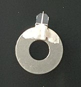

|
KPFM 概述
|
开尔文探针力显微镜（KPFM）是一种在纳米尺度上测定表面功函数的AFM模式。
主题：
测量模式：
系统要求：
所需许可证功能：
推荐悬臂梁：
悬臂梁和探针的几何形状是决定采集到的 KPFM 图像分辨率和精度的关键因素。细长但略微钝化的探针配合最小宽度和表面积的悬臂梁是最佳选择。
悬臂梁需要与安装环电连接。因此，使用银漆（图1）。可以使用金属涂层悬臂梁（如EFM）或高掺杂硅制成的悬臂梁（FM悬臂梁）。
金属涂层的稳定性较差。探针电极在扫描过程中常常会失去部分涂层。结果，探针电极将作为不稳定的参考，因为其表面电位分布在测量过程中会发生变化。
